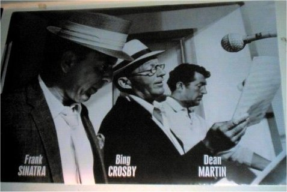
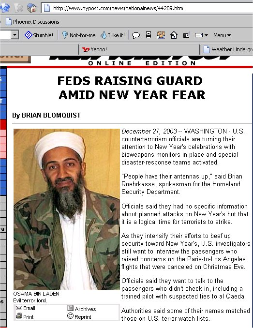

Looky here! I have added a "Weather Gizmo" from www.weatherunderground.com isn't it coooool??? Now all you non South African residents can see MY weather! :)
We got cool guy posters...have a gander!!! (read on)
The studs.jpg of course are MY studs....Deano, Frankie and Bing...mmmm studs! The other guy is Che Guevara...A Cuban Revolutionary from the 1960s who was tortured and murdered by the Bolivian Secret Police. According to my mom, everyone had Che posters up back in the 60s.

To read more about Che you can check out this website!!!
I thought this was only said in movies....(read on)
I found this article on Saturday on the NY Post's online edition website! I had such a giggle at the caption under Osama Bin Laden's name...have a look!

If a friend comes to you and says they need help...what is your first instinct? (read more)
Your first instinct is to help them. But do we help them when they need it or do we not get involved? We got involved and tried to help this weekend. We dropped everything for our friend. Phoned another friend to be our driver. He dropped everything. We took our friend away from the situation for their safety. We did everything we could to make them feel loved and safe.
Then late that night, we get a message on our cell phones...apologies, i love yous, i'm going to end it all. So what does our friend do but put themselves back into the dangerous situation we pulled them out of at their request. They can fix it, they have to try, the other person didn't mean what they said, it was all in anger and the other person still loves them.
We let our friend go back into the dangerous situation last night, but not without a fight and a few words that hopefully stuck inside their head. I cried, i was angry, still am angry and very very sad. There is nothing more we can do now. We told our friend that if they go we cannot help them again. They understood.
Someone told me long ago that people do not change for other people, they only change for themselves. This is very very true. I just hope our friend realizes this before it is too late. We love our friend very much. I hope they know this.
James and I learned our lesson, so to speak. We tried and that's all we can do.
Ok so like yeah....I've been reading news. I've been reading lots of news. Lots of things going on in this here world! Saddam, Osama, Bush, Michael, Freedom Tower, Idols (gag).....read on...
There seems to be lots of "stuff" happening lately. Most of which involves the great and wonderful US of A! I mean is there really ANYTHING in the news that doesn't involve the US?
Well ok, let us do a year in review like all the newspapers and magazines. The year started out like every other year. January 1st was the first day. Shocking that one. Then came the numerous threats by the US govt and how we better go and disarm Saddam because he's got these horrible weapons of mass destruction (i'm sure that phrase has been trademarked by now). So ok, March comes along, the Americans and British "attack". I believe I collected every newspaper for each day of the war. There are things in that paper you would never see in American papers. Plus since like I'm in another country, i see things differently and my mother called me un american or anti american. one of the two. so i kept the papers so she could see what i was seeing here.
Anyway ok the war goes on for a few weeks, Bush calls an end on May 1st and in the mean time has accused Syria and Iran of also having the evil WMDs. Oh yeah, don't forget North Korea....The Axis of Evil has been formed!!! *evil laugh* So yeah, we got an end to one war, and the prospects of a nuclear war in Asia and possibly more invasions in the middle east. Oh yes, sorry, i left out a rather important thing here....the ongoing "conflict" in Afghanistan.
The 100,000 + American/British/Spanish/etc soldiers were able to find Saddam in 9 months, but the 15,000 Americans have yet to locate Osama in nearly 2.5 years. Hmm....i sense something wrong....
Anyway we got these bad guys running rampant around the world and we have these other bad guys running the country. Then we have Michael Jackson who used to be black, but over the last 20 years or so, he's turned deathly pale, for want of a better term. He's been charged with numerous counts of child stuffs and like his family is throwing him a party this weekend or coming week. Wow! I want to be very very bad and have someone throw ME a party and invite 300 of my closest friends.
Okay....it's about time they came up with something to put in place of the Twin Towers. Oddly enuf, making the tallest building in the world wouldn't have been my idea of a GOOD thing....And the name Freedom Tower...sorta like Freedom Fries. Does that mean if we become friends with France again, the name will be changed to French Tower ? Not likely.
Someone please explain to me the attraction to the show Idols. Those ppl auditioning CANNOT sing and even the ones that win, usually suck ass. All these weird reality tv things are so annoying. It's like, "oh neat, let's jump on the band wagon and make one almost identical to the other three that are currently running!!!" Lame....
Let's see, what else has been ruling our world this year? Oh yeah, Matrix and Lord Of The Rings. I must admit, i was soooooo excited to see them all and hot damn i did see them. Opening nights too which was even cooler! Damn good movies and James and I are plannign on getting all on DVD once they are all out. Not until then tho. Gonna do the box set thingie!
Ok i would so type more but like it's 12:30am and i'm sleepy!!! :)
I'll write more tomorrow, i gots plenty to talk about!!!
night!!!
Well James and i were out shopping today and i come home to an MSNBC news alert in my email saying that Saddam had been captured near his home town of Tikrit. I couldn't believe it.....please read on....
So ok, Saddam was captured...but the first few articles didn't say WHEN he was captured, just that he was captured and it was announced today. So I go thru and open a few different articles and Fox News says that Saddam was captured on Saturday. Apparently DNA tests show that it is him. How did they get his DNA the first time? Did Saddam have a tooth extracted at a local dentist on one of his many international untelevised top secret visits to the US a few years ago? Doesn't matter, it's the American government. They can probably fabricate DNA nowadays anyway.
Ok, so the big bad leader of the Iraqi insurrgents has been captured *hooray* and the weapons of mass destruction have never been found *he must have hid them*. Now what? The International manhunt is now over. What reason do the americans have to stay in Iraq? I remember reading a quote from Bush saying, "When we find Saddam, we'll leave." HA I find that highly unlikely. What is the next excuse for staying now?
Well I must admit, i find it hard to believe now that Bush's visit to Iraq was for the "guys". In fact, I kinda thought it was really cool that bush went to Iraq for Thanksgiving. Now it makes me wonder...did he go there to have a "chat" with Saddam? Have all of Donald Rumsfeld's visits lately been to "chat" to Saddam?
Anyway, I think this is just a huge stunt by the American government. So close to Christmas and all. Blah blah blah....
ok i'm done bitching for now.....I'm sure I'll have more to say in the coming days.
byeeeeeeeee :)
....i bet you thought i was going to finish that sentence the way EVERYONE does. Well HA! You are highly mistaken. Anyway, the look of this blog is gonna change tonight. I find it highly boring and like WAY bland. So I"m gonna colorize! :) WOOOOOHOOOOOOO! :)
Ok so here is my new second entry to my cool new blogger dealie thingie jiggie. I hope you all stay more informed with my life now. :) In case some of you are new to my list or have forgotten. Everytime i add a post, i can choose to send a notice to your email addresses. This happens to be one of those important posts. Mostly because it's about me. :) hehehehe byeeeeeeeeeeeeeeeeeeeeeeeee
Helloooooooooooooooooooo everyone! I know you have all missed my numerous entries into my blog thingie. We had some ruff times and bad shit, but we're back and things are finally getting better!!!! WOOOHOOOO! :)